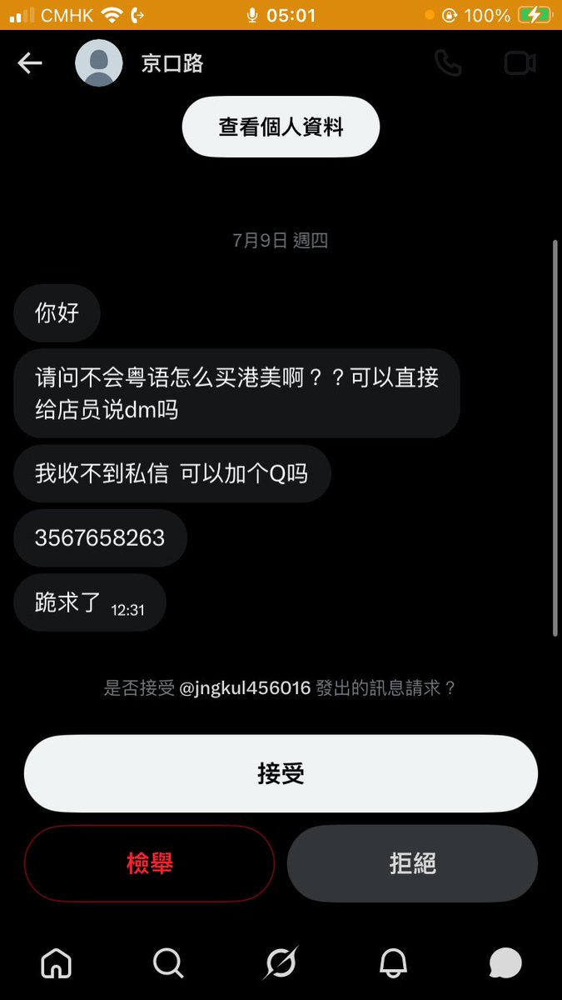

plsDontkissmeonthesidewalk
@cigsafterdrug
@Ame8964 一眼警 晶哥求放過

Ame
@Ame8964
不知道是晶哥还是真不知道 反正我自己咳嗽的时候去药房就是直接问有没有d字头那个咳药 我当然是用粤语 你不会的话就找个朋友教你怎么念吧 实在不行你就打在备忘录给店员看呗 实则买不买得到当然是看药房的个别选择要不要卖 https://t.co/iDvPNLWTiO